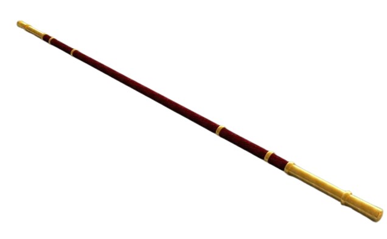

Bang - Bastão feito de madeira ou metal, utilizado como arma básica.

Sansetsukon - Um tipo de nunchaku de três bastões, preso por corda ou corrente.
Pilo - Lança comprida, arma romana contra cavalaria.

Púgio - Punhal romano, muito utilizado por status e ataques curtos.

Jitte ou Jutte - Espada de defesa, similar ao Sai.

Tachi - Espada japonesa longa e curvada.
Kusarigama - Foice com corrente e peso na ponta.